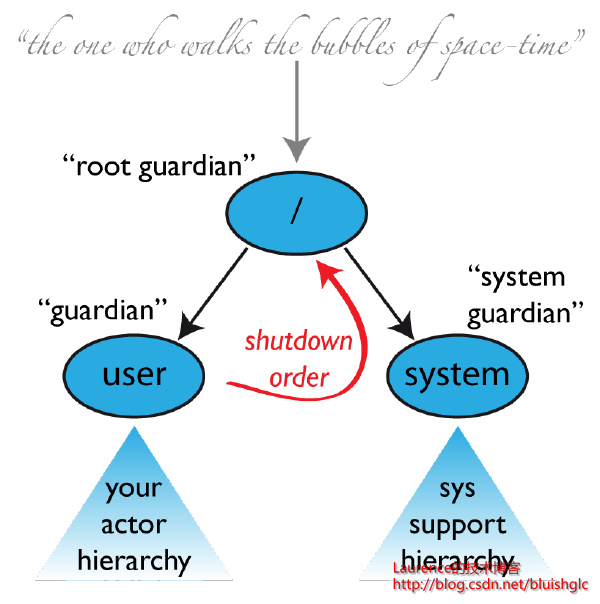
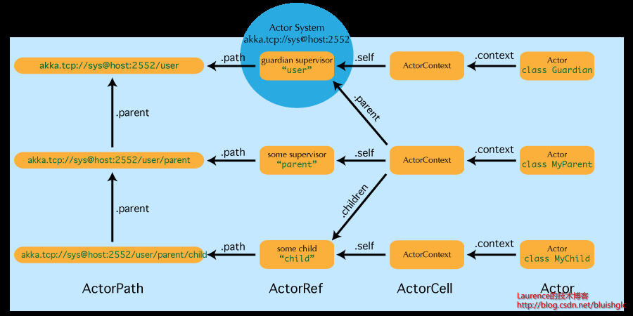
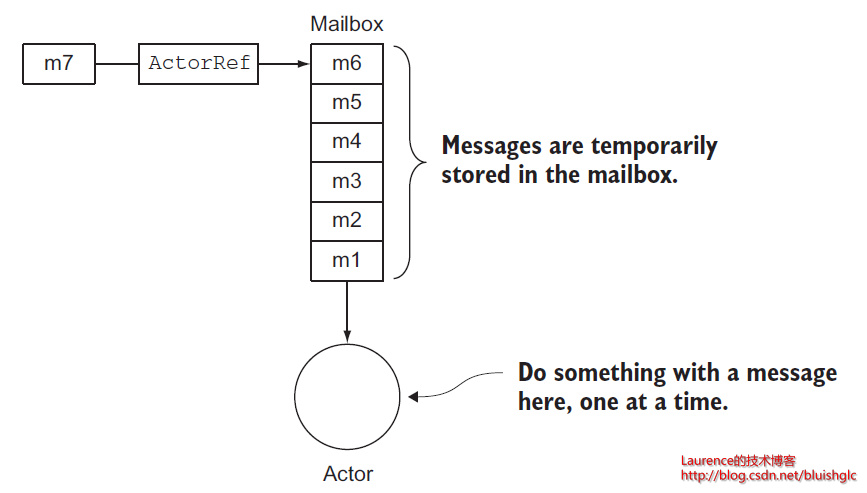
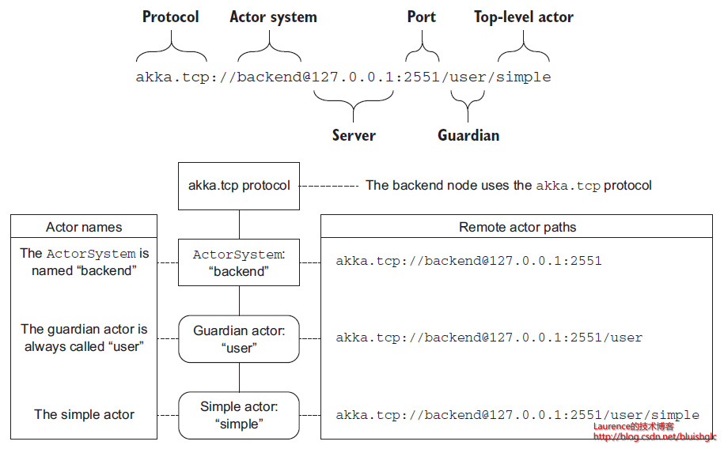

一份关于AKKA的初步的琐碎的笔记
本文原文出处: https://laurence.enlightgram.com/scala/akka-notes/ 严禁任何形式的转载，否则将委托CSDN官方维护权益！
Actor系统
An actor is a container for State, Behavior, a Mailbox, Child Actors and a Supervisor Strategy. All of this is encapsulated behind an Actor Reference.
Actor像是一个容器，它包含了：它自己的状态，行为，一个Mailbox，一些Child Actors和一个监管策略。所有这些被封装在一个ActorRef里。
Supervision and Monitoring
Each actor is potentially a supervisor: if it creates children for delegating sub-tasks, it will automatically supervise
them.
每一个Actor都是一个潜在的Supervisor，如果它创建了子Actor并被委派以任务，它将自动变成Supervisor。一个Actor的子Actor是维护在这个Actor的上下文中的.
the supervisor
delegates tasks to subordinates and therefore must respond to their failures. When a subordinate detects a failure
(i.e. throws an exception), it suspends itself and all its subordinates and sends a message to its supervisor, signaling
failure.Depending on the nature of the work to be supervised and the nature of the failure, the supervisor has a
choice of the following four options:
-
Resume the subordinate, keeping its accumulated internal state
-
Restart the subordinate, clearing out its accumulated internal state
-
Stop the subordinate permanently
-
Escalate the failure, thereby failing itself
Supervisor委派任务给Subordinate，因此它有责任处理Subordinate的失败。当一个Subordinate检测到失败时（如抛出了一个异常），Subordinate会将自己和自己所有的子Subordinate挂起，然后发送一个消息给它的Supervisor,通知失败。基于被监管的任务和失败的性质，Supervisor有4种选择：
-
恢复Subordinate，保持它积累下来的内部状态
-
重启Subordinate，清空它的状态
-
永久地停止Subordinate
-
将错误逐级上报，因此也将它自己标记为失败。
If you try to do too much at one level, it will become hard to reason about, hence the recommended way in this case is to add a level of supervision.
鉴于Actor的这种监管机制，如果一个Supervior管辖了过多的Subordinate,在
Subordinate发生错误时，波及面的会非常大，同时也很难精准的定位错误，所以，推荐的合理做法是：再追加一层supervior。这就像组织文件一样，同一个文件夹中存放过多的文件是不明智的，如果引入多级文件夹来分类管理，效果会好很多！
Akka implements a specific form called “parental supervision”. Actors can only be created by other actors—where
the top-level actor is provided by the library —and each created actor is supervised by its parent.
在构建Actor之间的supervision关系时，Akka实现了一种特定的形式：“父母式的监管”。换言之，Supervisor和Subordinate之间更加类似于“父子”关系，这体现在它们的生命周期和协作关系上。Subordinate总时由它的Supervisor 创建，Supervisor如果失效，它的所有Subordinate也会随之失效。(最顶层的Actor是由系统创建的）
The Top-Level Supervisors
在系统启动时AKKA会自动创建3个Top-Level的Actor，如下图：

总地来说有三个：”/”,”/user”,”/system”,这三个Actor我们按它们的作用可以分别给它们一个别名：”Root Guardian”，“System Guardian”,”Guardian”。
“/user”: The Guardian for all user created actors.
这是所用用户创建的Actor的父Actor,也就是通过system.actorOf()创建的actor都是这个actor的child. the user guardian使用的默认监管策略(supervision strategy)是：一但遇到异常就重启它的children, 除非它收到了一些内部异常，表明那个actor被kill或在初始化时失败了，这时它会停止这个actor.
Actor References, Paths and Addresses
下图展示了Actor系统的几个主要组件：

Actor References
一个Actor对象需要被”保护”起来以便于我们可以从Actor模型中收益。因此，Actor总是使用ActorRef作为其对外的“全权代表”。这种内外的隔离使得从试图从外部观察和干预它的状态是不可行的。
每一个Actor的Reference都是ActorRef的一个子类，它的主要职责是给它所代表的Actor发送消息。一个Actor实例可以通过它的self字段获得它的ActorRef实例的引用，当然，这个self还是从context中获得的，如上图所示。（Actor源码中对self字段的声明代码： implicit final val self = context.self ）
ActorRef,Mailboxt和Actor三者之间的关系
当消息发送给一个Actor的ActorRef时，每个Actor有一个MailBox, 这个MailBox看起来很像一个消息队列，消息会临时存放于这个MailBox里等待Actor逐一去处理。下图展示了ActorRef,Mailboxt和Actor三者之间的关系是：

Actor Path

创建Actor
首先，你的Actor需要继承Actor Trait，Actor Trait中有一个虚方法：receive, 你的Actor必须要实现这个方法。这个方法规定返回的是一个偏函数：PartialFunction[Any, Unit]，所以通常情况下，我们使用case语句来快捷地创建这个偏函数。请看下面的示例：
1 | import akka.actor.Actor |
接下来我们需要初始化这个Actor, 如前所述，用户的Actor几乎总是通过system.actorOf的方式来创建，因为这后面有一系列的辅助工作，并且Actor实例是完全对外隔离的，所以基于这些原因我们使用system.actorOf这种形式来创建Actor，但是这个方法显然不能像Actor的构造函数那样方便的使用，对于构建Actor实例需要的参数和配置信息，AKKA设计了一个专门类：Props来完成这个工作。如下是一个简单的示例，这是创建Actor实例的标准做法：
1 | import akka.actor.ActorSystem |
It is a good idea to provide factory methods on the companion object of each Actor which help keeping the
creation of suitable Props as close to the actor definition as possible. This also avoids the pitfalls associated with
using the Props. apply (…) method which takes a by-name argument, since within a companion object the
given code block will not retain a reference to its enclosing scope:
一个值得推荐的最佳实践是：为每一个Actor创建一个伴生对象，在伴生对象里提供工厂方法用来帮助保证Propos的创建尽可能地贴近Actor的定义。就像下面一样的作法，props方法就是为DemoActor专门创建Props的工厂方法：
1 | object DemoActor { |
另外一个最佳实践就是在Actor的伴生对象中声明这个Actor能接受的所有消息种类，就像下面这样：
1 | object MyActor { |
最后是关于child actor的创建，你总是应该使用某个actor的context字段来创建它的child actor,就像下面这样(BoxOffice是TicketSeller的Parent Actor):
1 | class BoxOffice(implicit timeout: Timeout) extends Actor { |
注：actorOf方法位于：akka.actor.ActorRefFactory#actorOf(akka.actor.Props, java.lang.String)， ActorRefFactory是ActorContext和ActorSystem的共同父类，因此两者都拥有该方法。
一份关于AKKA的初步的琐碎的笔记